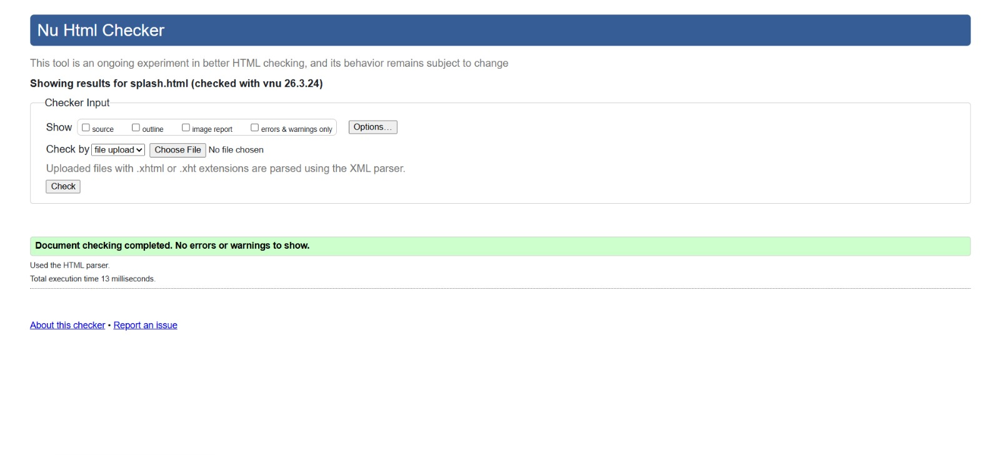
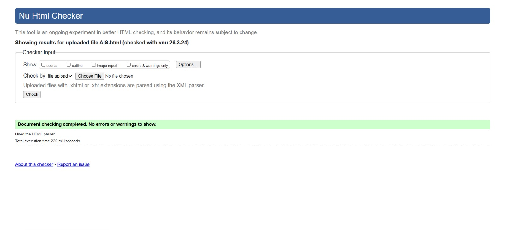

Splash Screen (splash.html) Validation
Reflection: Validating the Splash Screen was relatively straightforward. Since it uses minimal HTML structure and heavily relies on CSS/JS for animations, there were few structural issues. Initially, I had a warning regarding missing alternative text for an element, but I resolved this by ensuring all non-text elements used for visual effects included aria-hidden="true".

Back to Page Editor
Action Impact Simulator (AIS.html) Validation
Reflection: The Action Impact Simulator page required careful attention to HTML5 custom data attributes (e.g., data-id, data-points). The W3C validator successfully recognized these as valid HTML5. I encountered an initial error related to an unclosed div tag within my action grid, which was quickly identified and fixed using the validator's line-number feedback. I also ensured all interactive elements passed basic structural checks.

Back to Page Editor
Return to the Action Impact Simulator section in the Page Editor
Content Page (content_ST2.html) Validation
Reflection: Validating the Content Page helped me clean up my semantic structure. The validator flagged an issue where an h3 tag was used directly after an h1, skipping the h2 level. I corrected my heading hierarchy to ensure a logical document outline. Additionally, I double-checked that all my images had descriptive alt attributes to comply with accessibility standards, resulting in zero errors on the final check.